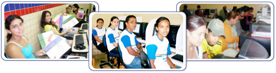

Olá, Seja bem-vindo (a)
Jovem Empreendedor de Pernambuco destaca-se no Estado

O Jovem Empreendedor de Pernambuco é um projeto desenvolvido pelo Governo Estadual, em parceria com o Governo Federal, executado através das Secretarias de Educação, Secretaria Especial de Juventude e Emprego, contando ainda com apoio da Unidade Técnica Agência do Trabalho.
O Projeto visa às ações de qualificação por ensino a distância dos alunos concludentes do ensino médio das escolas estaduais de Pernambuco, e é executado com recursos do Governo do Estado, procedentes do Tesouro Estadual e do Fundo Estadual de Combate e Erradicação da Pobreza (FECEP), assim como do Governo Federal, com recursos do Ministério da Ciência e Tecnologia.
O programa iniciou em agosto desse ano e garante estender os resultados qualificando 5 mil alunos. Presente em 74 municípios e 123 escolas, o projeto conta com a colaboração de 247 professores.
“Os resultados encontrados são positivos, o JEP além de incluir digitalmente os alunos e qualificá-los em empreendedorismo para a vida e montagem do negócio, desperta nos jovens todo o potencial criativo”, comentou Ulisses Vicente, coordenador do projeto.